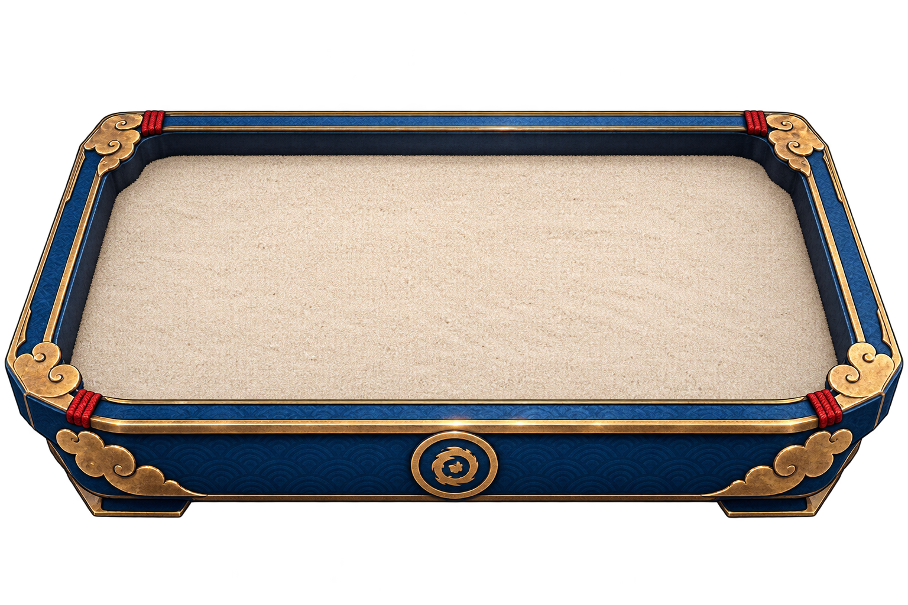
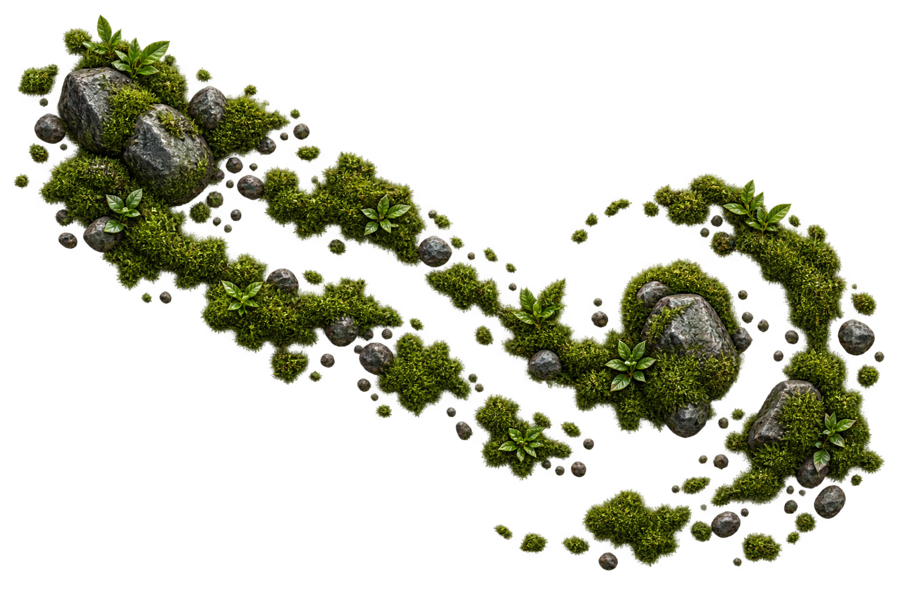
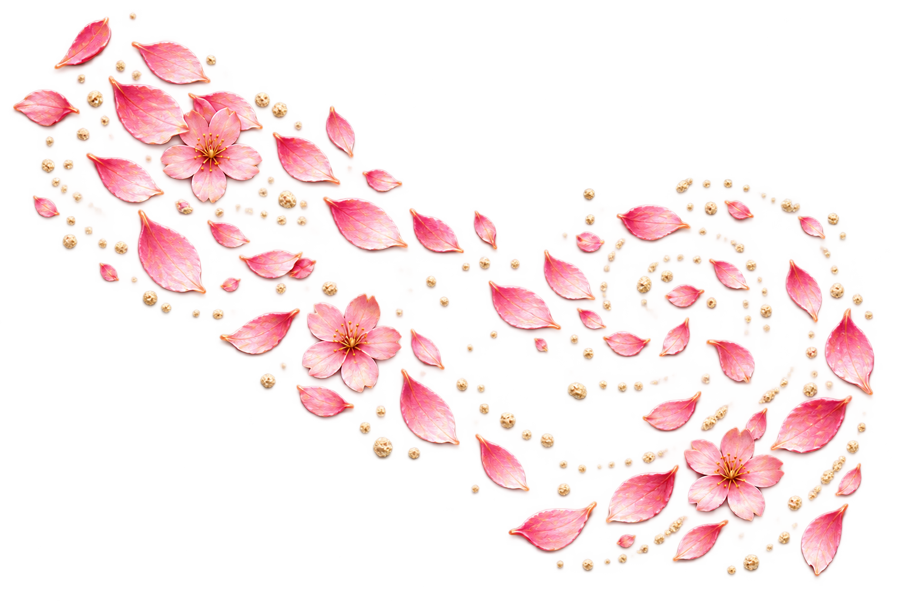

BLAZING BATTLESANCTUARYFIRST BLOOM · CULTIVATION 1
葉0LEAF ESSENCE
石0GARDEN STONE
水0SPIRIT WATER
和0HARMONY SEAL



SeedlingTREE · 0%
Untouched GardenHARMONY · 0%
CULTIVATION COMPLETEFIRST BLOOMHARMONY SEAL ACQUIRED